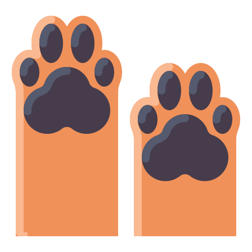

Morder

Los cachorros puede mordisquearte mientras aprenden a comunicarse
con sus dueños. Esto a menudo sucede mientras juegan, ya que los
perros jóvenes por lo general se comunican con la boca al
interactuar.
Si tu perrito lo hace con frecuencia, es importante detenerlo
antes de que desarrolle una conducta canina más problemática a
largo plazo.
Hacer circulos
Sí, en ocasiones es divertido verlo perseguir su cola, pero si tu
cachorro no puede dejar esa compulsión, hay algún problema debajo
de la superficie.
Los perros mayores pueden padecer síndrome
vestibular idiopático, y, no por alarmarte, todos los perros están
en riesgo de ser envenenados o tener un tumor cerebral. Solamente
tu veterinario puede determinar la causa.
Excavar
Los perros excavan en el piso por muchas razones, para escapar,
rastrear animales, para hacer un lugar fresco donde recostarse, o
para esconder algo importante para ellos.
¿Has notado a tu perro rascando las cobijas o sillón para
encontrar el lugar perfecto para acostarse? Esta conducta de los
perros se da con más frecuencia por las noches y durante las
siestas, y es completamente normal.
Dar la pata

Este gesto puede representar cierta exigencia; cuando un perro da la pata, puede ser su manera de pedir algo o de intentar calmarte, pero suele ser un indicativo de que se alegra de estar contigo.
Jadear

Los perros expulsan la mayor parte del calor de sus cuerpos por la
boca. Cuando tu perro jadea, probablemente tenga mucho calor, por
lo que está regulando la temperatura de su cuerpo.
Sin embargo, es importante prestar atención al jadeo, ya que
también puede hacerlo cuando siente dolor.
Buscar cercania


Los perros son animales gregarios y, además, necesitan el contacto
físico. Por eso, un perro feliz te recibirá contento cuando
llegues a casa.
Y no solo eso: se pegará a ti como una sombra, tanto para
disfrutar de tu compañía como para hacerlo de tus mimos.
Bostezar
Aunque puedes creer que necesita dormir, el bostezo de un perro no
siempre significa que está cansado. Puede estar interesado en una
siesta pero también puede estar mostrando un signo de temor o
estrés.
Si parece que tu perro bosteza en mayor proporción cuando está
cerca de alguna persona nueva, no fuerces las presentaciones.